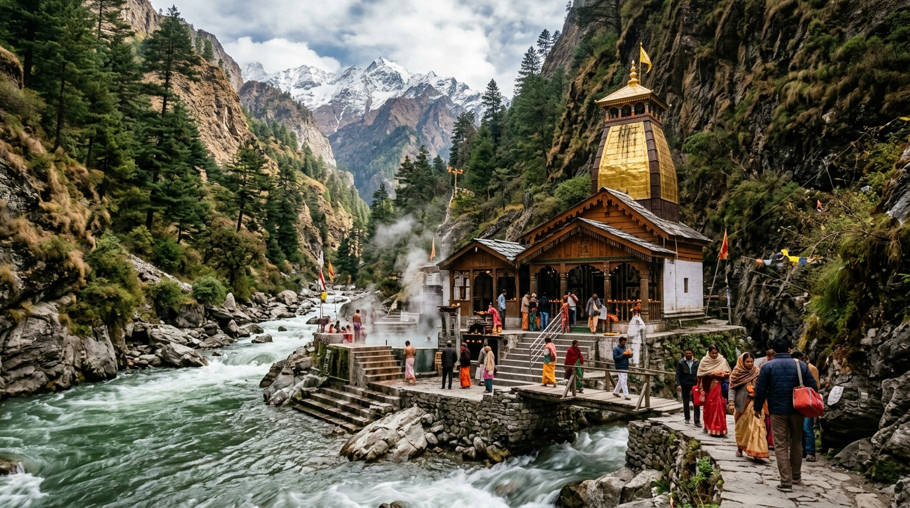
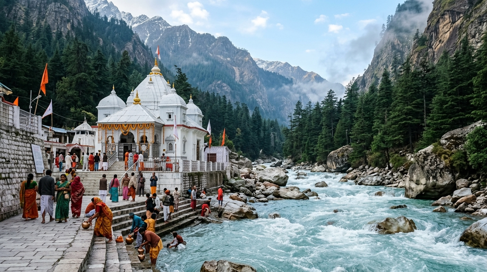
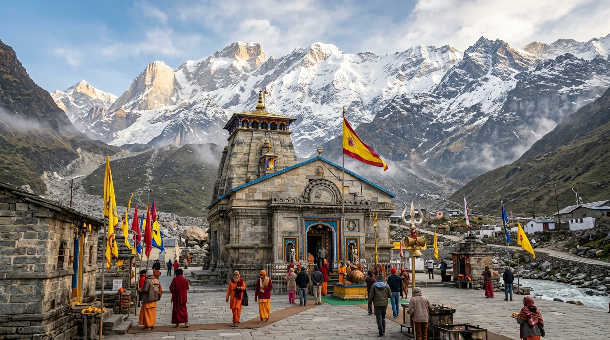
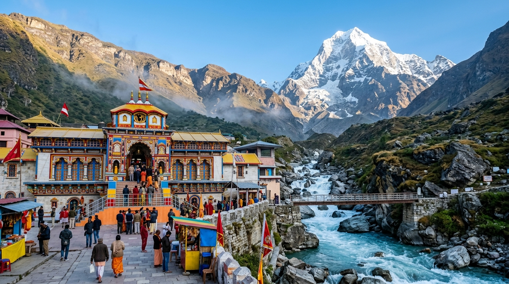

The sacred journey to Yamunotri, Gangotri, Kedarnath, and Badrinath. Thoughtfully designed with gradual acclimatization, confirmed biometric pass assistance, and respectful Sattvic dining.
All pilgrims visiting Kedarnath, Badrinath, Gangotri, and Yamunotri must register on the official Uttarakhand government portal. Our team assists every guest with hassle-free registration.
We follow the canonical Parikrama order: starting with Yamunotri (purification), Gangotri (devotion), Kedarnath (tapasya at Jyotirlinga), and concluding at Badrinath (moksha).
For senior citizens and families, we coordinate verified helicopter bookings from Phata/Sersi/Guptkashi directly to Kedarnath Helipad, or certified ponies and palkis.
Detailed overviews of the four sacred abodes, their altitudes, river sources, and spiritual significance.

Holy YamunotriDedicated to Goddess Yamuna, daughter of Surya and sister of Yama. Pilgrims cook rice tied in cloth inside the boiling natural thermal springs of Surya Kund and offer prayers at Divya Shila before entering the black marble deity sanctum.
Trek: 6 km scenic paved ascent from Janki Chatti (Pony/Doli available)
Holy Kund: Surya Kund (Boiling Thermal Spring) & Jamunabai Kund

Sacred GangotriThe white granite temple where Goddess Ganga manifested on Earth from Lord Shiva's locks. Pilgrims perform holy dips in the icy Bhagirathi river, meditate at Bhagirath Shila, and admire cedar forests of Harsil valley.
Access: Fully motorable highway right up to temple entrance
Glacier Source: Gaumukh Glacier (18 km high trek with forest permit)

Supreme JyotirlingaThe highest of the 12 Jyotirlingas, surrounded by snow-covered Kedarnath peaks. Consecrated by Adi Shankaracharya and originally established by the Pandavas. Unrivalled evening Aarti and mountain devotion.
Trek: 16 km mountain route from Gaurikund, or 10-minute helicopter from Phata/Sersi
Highlights: Jyotirlinga Darshan, Bhairavnath Temple, Gandhi Sarovar

Abode of VishnuAbode of Lord Badri Vishal along the holy Alaknanda river, framed by Nar and Narayana mountain ranges. Bathe in natural sulfur Tapt Kund springs, and explore Mana, the First Indian Village.
Access: Direct motorable NH 7 highway up to Badrinath town
Nearby Excursions: Mana Village, Vyas Gufa, Bhim Pul, Saraswati River origin
Yamunotri, Gangotri, Kedarnath, and Badrinath in canonical order with private vehicle, hotel stays, and biometric registration support.
The two foremost Himalayan abodes of Shiva and Vishnu, starting from Haridwar/Rishikesh or Dehradun.
Kedarnath, Tungnath (highest Shiva temple), Madmaheshwar, Rudranath, and Kalpeshwar. A life-transforming trek through sacred Garhwal.